Having a smaller scope in mind after a major project like Fateful Fragments, I set my sites on a product targeted toward a niche audience. A tower defence game with heavy gameplay systems, inspired by the widely popular game Arknights.
An overview of my systems heavy tower defence game I am designing.
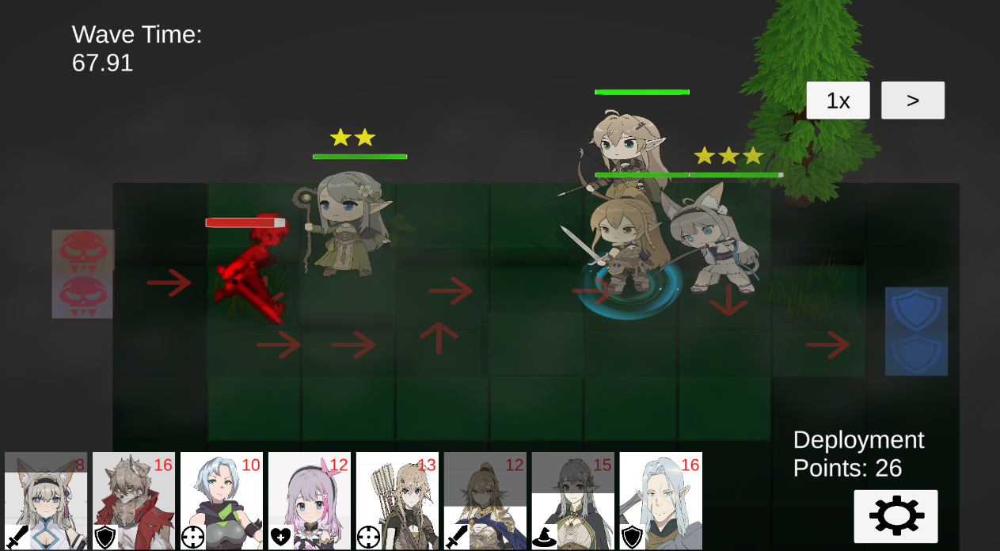
Having a smaller scope in mind after a major project like Fateful Fragments, I set my sites on a product targeted toward a niche audience. A tower defence game with heavy gameplay systems, inspired by the widely popular game Arknights.
I would be the sole designer and programmer for this game. I would contract the following roles out:
I wanted to pursue some sort of skill tree system and equipment system that allowed for player expression.
I begun by using a simple DAG (Directed Acyclic Graph) design. This was super easy to program as basically every node just needed to check if its parent was leveled to allow it to be levelable as well. And of course there was only 1 root node, so it had no parents.
Each unit
would have three paths to go down. Typically choosing attack, attack speed, or utility such as health and damage reduction. The middle of the tree would contain a special passive always active, and the bottom node would of course be an ultimate change node.
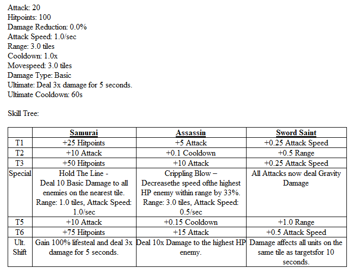
I also added a light-weight tooltip system for ease of viewing.
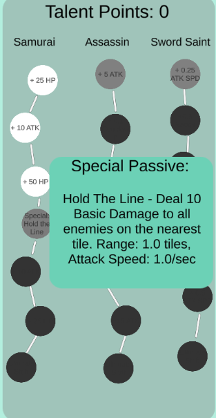
I had great feedback on this system; However I felt that the three paths felt boring and there wasn't much innovation I could do to make each individual node feel impactful. So I decided to take a look at what a more popular game did.
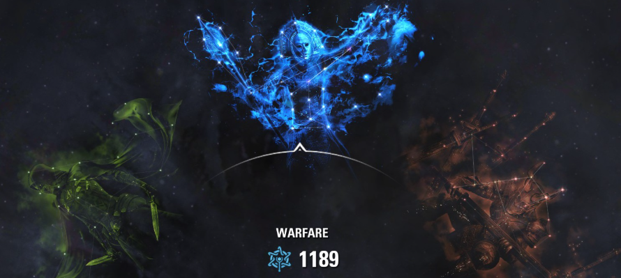
Elder Scrolls incorported images, and graphs with multiple paths in them. I wanted something visually appealing and that TRUELY allowed player choice. Not a one directional psuedo choice.
Here's what I ended up creating:
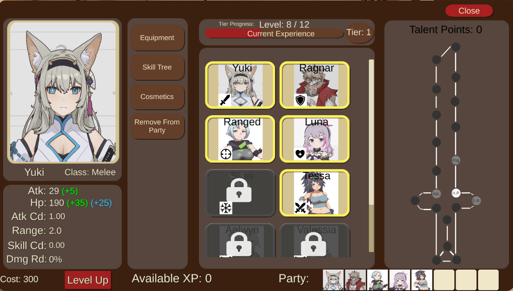
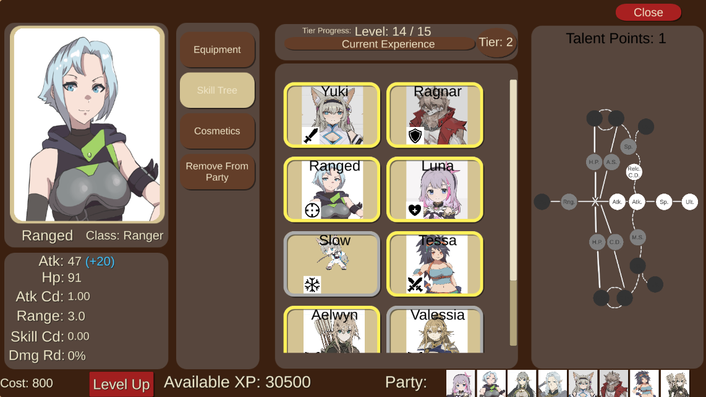
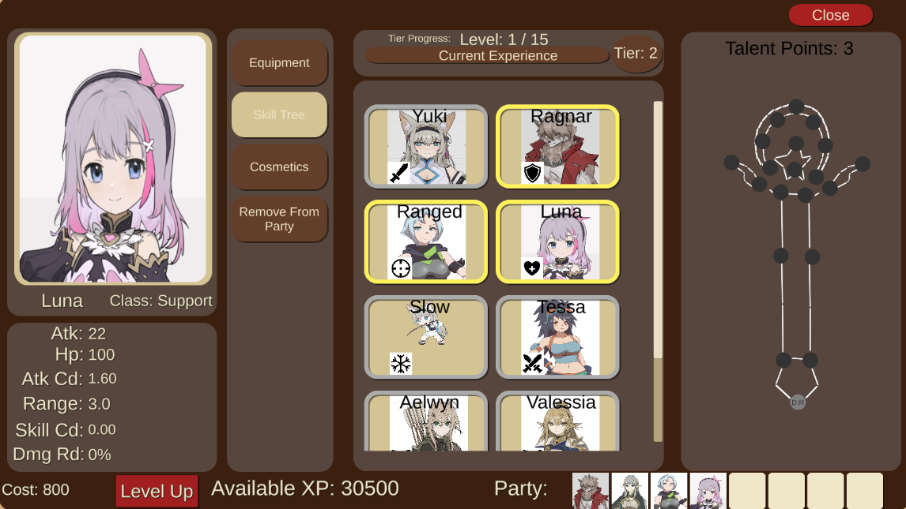
This new style allowed a wider variety of builds and felt more unit-specific. Just what I wanted.
This system was a lot easier to work with. I really just needed a front-end display that made sense to players paired with the simple application of stats visually in UI and "physically" inside of the game.
Each unit would have three slots, which really were just integer arrays on the backend. Easy to track, alter, and very scalable. I then would divide items into each category and make serializable objects for them.
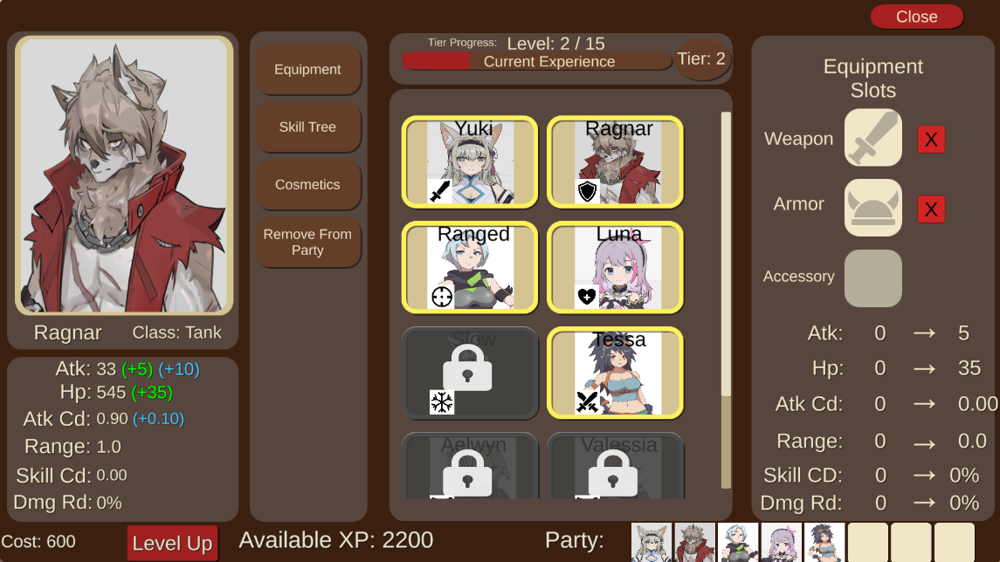
I added a popout when players clicked on a UI equipment slot as seen here. It's a simple scrollview UI populated with items from that given category at runtime. Hovering over any specific item also shows stats in the bottom panel for ONLY that item until exiting that hover. All item stat changes are displayed on that bottom panel.
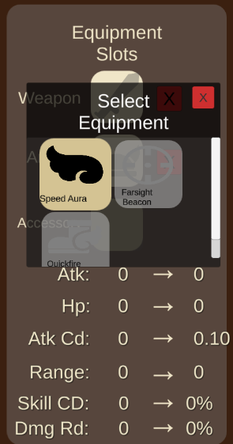
Lastly, I present this information in a digestible manner on the final total stat panel on the left side of my unit UI. You can see base stats of a unit, and stat gains from skill trees are in blue, along with stat gains from items in green.
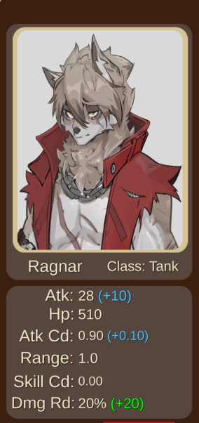
Player feedback has been great! Players understand what items and skill are doing to their units stats in an easily understood format.
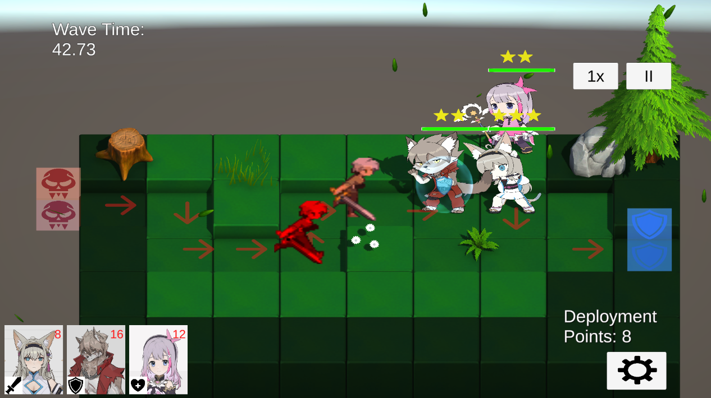
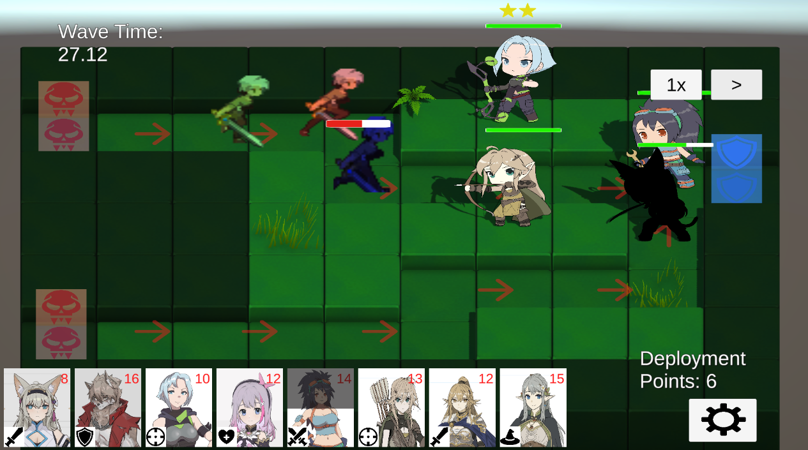
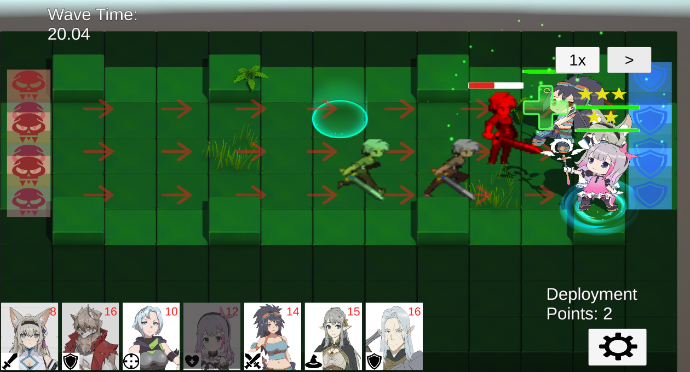
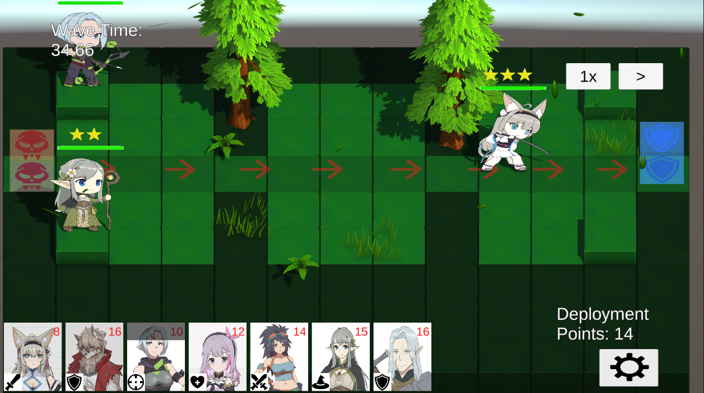
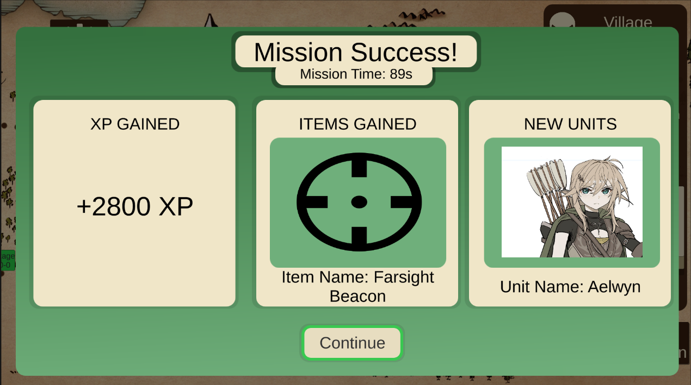
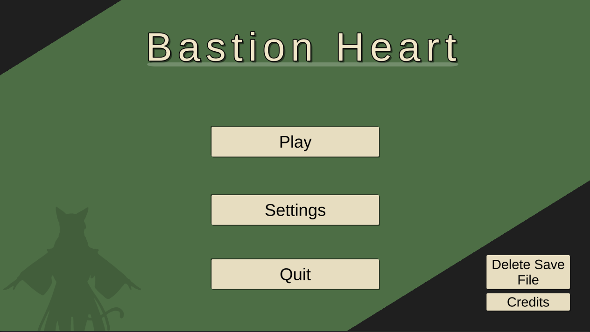
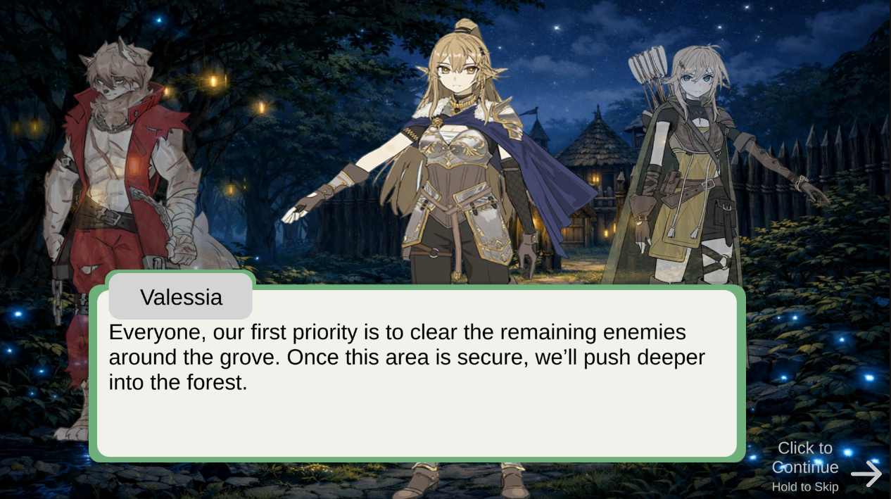
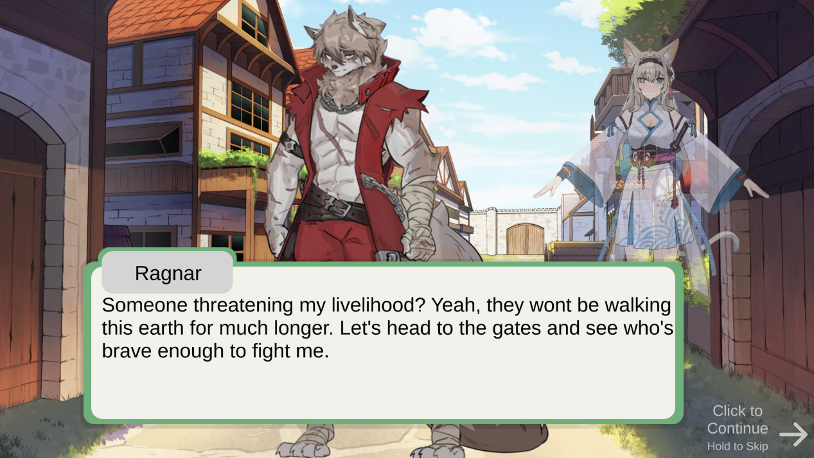
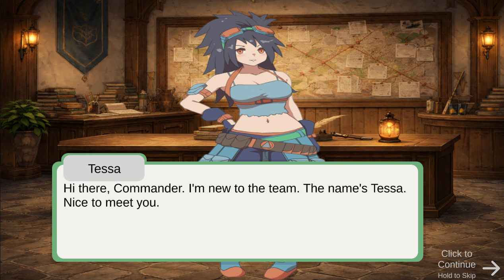
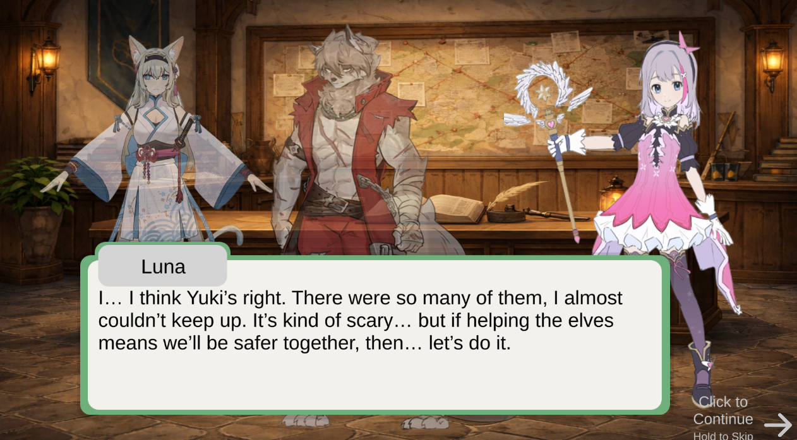
Thanks for checking out some of my systems design and Bastion Hearts!